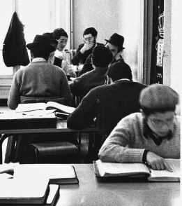

הרה״ח ר׳ יואל א״דלמן למד בישיבות: תומכי תמימים מונטריאול, תורת אמת ירושלים, אהלי
הרה״ח ר׳ יואל א״דלמן למד בישיבות: תומכי תמימים מונטריאול, תורת אמת ירושלים, אהלי תורה, תומכי תמימים ברינואה צרפת תפקיד נוכחי: מנהל רוחני בישיבה קטנה תומכי תמימים ברינואה צרפת
הרה״ח ר׳ יואל א״דלמן
למד בישיבות: תומכי תמימים מונטריאול, תורת אמת ירושלים, אהלי תורה, תומכי תמימים ברינואה צרפת
תפקיד נוכחי: מנהל רוחני בישיבה קטנה תומכי תמימים ברינואה צרפת

הגעתי לתומכי תמימים במונטריאול לראשונה בנת תשד”מ בגיל 14. עד אז למדתי קרוב לבית בתלמוד תורה במרוקו. אני רציתי לעבור לישיבה כבר בגיל 13 אבל ההורים שלי, שלוחי הרבי במרוקו משנת תשי”ט, הרב שלום וזוגתו הרבנית גיטל שחינכו אותי להתקשרות לרבי וטיפלו בי במסירות, רצו שאשאר עוד שנה ליד הבית (שזה כשלעצמו דבר מאוד חשוב, משום שיש שחושבים שצריך לשלוח את הילדים מוקדם ורחוק מכל מיני סיבות. אבל בגיל הזה החום של הבית הוא מאוד חשוב).
בשנה הזו בה נשארתי בבית הצטערתי הרבה. בכיתי על זה שלא נתנו לי לנסוע לישיבה, הרגשתי שבגלל ההורים שלי, אני לא גדל כמו בחור חב”די רגיל. הייתי בטוח שכל הנערים החב”דים בני גילי שלא בשליחות יודעים ללמוד הרבה יותר טוב ממני והם בטח בחורים הרבה יותר חסידיים. אבל כשהתבגרתי, הבנתי עד כמה השנה הזו נתנה לי, ועד כמה ההורים שלי צדקו בהחלטה להשאיר אותי בבית שנה נוספת.
הזיכרון הראשון שלי מהישיבה היה הרושם של ישיבה חב”דית שזה משהוא שראיתי אז לראשונה בחיי. תפסו אותי במיוחד הדמויות החסידית שהיו אז בישיבה כמו כמו הרב יצחק הענדל, הרב אייזיק שווי, הדוד הרב שלום בער גורקוב, שאצלו למדתי במשך כמה שנים. ומשפיעים כמו הרב גרינגלס המקובל והרב יצחק מאיר גוראריה.
בכלל, מונטריאול הייתה ‘עיירה חסידית’ והיו שם הרבה חסידים גדולים גם במוסדות ובקהילה חלקם נשלחו עוד על ידי הרבי הריי”צ והיו השלוחים הראשונים בקנדה. חלקם עבדו בישיבה ובתלמוד תורה וחלקם התעסקו עם הקהילה. אבל כולם היו דמויות חסידיות ששימשו מקור השראה ודוגמה חיה. אני זוכר שהייתי עוקב אחריהם בתפילה, בלימוד ובהנהגה וזה עורר בי התפעלות גדולה.
ההחלטה לשלוח אותי למונטריאול הייתה מכיוון שדוד שלי הרה”ח ר’ שלום בער גורקוב עבד אז בישיבה, ורצו שיהיה מישהו קרוב שידאג לי. למרות זאת, היו לי בהתחלה קשיים, כל הסביבה והבחורים היו חדשים לגמרי עבורי, אני הגעתי ממרוקו ולא הכרתי אף אחד, אבל ב”ה, לאט לאט נכנסתי למסגרת והתרגלתי לחיים בישיבה.
אפשר לומר שבמונטריאול קיבלתי את החינוך שלי כתמים. שם קיבלתי את ההבנה הפנימית של מה זה ‘תמים’ ומה נדרש ומה מצופה ממנו. אחת המעלות של הישיבה במונטריאול, היא שהישיבה רחוקה מהשאון וההמולה של קראון הייטס ו–770, ומצד שני, זה עדיין במרחק שמאפשר לך להגיע מספר פעמים בשנה ל–770 ולהתבשם מהקודש בכל הזדמנות מיוחדת.
אחרי הלימודים במונטריאול, נסעתי לארץ הקודש והמשכתי את לימודי בישיבת תורת אמת בירושלים, ואחר כך באהלי תורה בקראון הייטס. משם המשכתי לשנתיים וחצי שליחות בישיבה בברינואה שגם השנים הללו תרמו לי המון.
חוויה משמעותית
כל השנים בישיבה היו חוויה משמעותית אחת גדולה שהשפיעה ועיצבה את חיי ובנתה את אישיותי. ההתוועדויות, השיעורים, השיחות עם המשפיעים, החיים בישיבה. בכל המקומות בהם למדתי, אם זה מונטריאול, ירושלים, ניו יורק או ברינואה, כל רגע ורגע היה יקר, משמעותי ומשפיע לאורך זמן.
דמות מיוחדת
כולם. כל הרבנים שלי. כולם היו דמויות חסידיות מיוחדות שהשפיעו עלי בכל, בכלל מונטריאול הייתה קהילה מיוחדת מלאה בחסידים דגולים שחרטו את רישומם בנשמתי. אבל אם לחשוב על דמות אחת מתוך הרבנים שלי, הרב הראשון שלי לגמרא הרב שלום בער מוצקין מנהל צא”ח במונטריאול, שהיה בא ללמד אותנו גמרא כל בוקר. הוא היה חסידישער מלמד אמיתי. הייתה לו שפה עשירה וכישרון הסברה מיוחד במינו. אבל העיקר אצלו הייתה החיות בלימוד. הוא פשוט היה חי את הסוגיות. כשהוא שאל שאלה, הרגשנו שזו קושיה. ממש הלכנו בתחושה שאי אפשר להמשיך את החיים וכשהוא ענה תירוץ הרגשנו שזה תירוץ, כאילו שירד לנו משא מהכתפיים. זה נתן לנו הרבה הבנה בלדעת איך ללמוד. הרגשנו שהגמרא היא דבר חי, זה לא עניינים ומהלכים תיאורטיים בלבד, וכדי להרגיש את זה צריך לדעת איך ללמוד. זה הדבר הראשון שהוא החדיר בתלמידים. חוץ מזה, הוא היה ר”מ בנגלה אבל היה מלא בחסידישקייט ויראת שמיים. וזה פעל עלינו המון.
צידה לדרך
אחד הדברים המיוחדים אצל דוד שלי הרב שלום בער גורקוב, היה התשומת לב הרבה שהיה מקדיש לתלמידים. אחרי מבחנים הוא היה יושב עם כל תלמיד ועובר אתו על המבחן. אם היו שאלות בהן התלמיד נכשל, הוא היה עובר אתו על החומר ולפעמים היה לומד את כל הסוגיה ומסביר לו הכל מחדש. השיטה שלו הייתה שמבחן נועד כדי שהמגיד–שיעור יגלה את מה שהתלמיד לא יודע, במטרה שהמורה יוכל למלא את החיסרון. לפעמים זה לקח לו כמה ימים, אבל הוא לא וויתר על אף אחד. הוא נתן לי דוגמא איך צריך להתמסר לתלמידים ואיך צריך לתת תשומת לב אישית לכל אחד ואחד הן בלימוד והן בחינוך.
אנחנו עומדים כיום בשנת המאה ועשרים לתומכי תמימים ושנת השבעים לישיבה בברינואה שעליה אמר הרבי על דרך כבליובאוויטש. הישיבה בברינואה זו לא ישיבה חדשה כמו הרבה ישיבות שהרבי ייסד בארצות הברית ובארץ הקודש, אלא זו הישיבה שממשיכה ממש את תומכי תמימים בליובאוויטש.
תומכי תמימים העתיקה את מקומה כמה פעמים מפני צוק העיתים, אבל ברור שגם כשהישיבה הייתה בטשקנט, בסמרקנד או בפוקינג זה היה המשך של הישיבה בליובאוויטש. אחר כך עזבו את מזרח אירופה ועברו לצרפת והעתיקו את הישיבה לברינואה, אז ברור שזה המשך אחד ומהות אחת. הרבי השקיע הרבה מאוד כוחות בישיבה הזו. ולכן אנשים חשים כאן את מה שלא חשים בשום מקום אחר.
ברוך ה’, אנחנו רואים כיום בישיבה את הפירות של מה שהרבי השקיע בפריז. דור שני ושלישי של ילידי צרפת שלומדים נגלה וחסידות, מסיימים מסכתות, לומדים תניא בע”פ. חלקם יודעים י”ב פרקים עם ההקדמות, חלקם יותר, יש לנו אפילו תלמיד שסיים השנה את כל הג”ן פרקים ואין ספק שזה בזכות תומכי תמימים והכוחות שהרבי השקיע בה וכמובן בזכות הצוות המסור, הר”מים המשפיעים וההנהלה שמתמסרים לתלמידים באופן של למעלה מהרגיל.